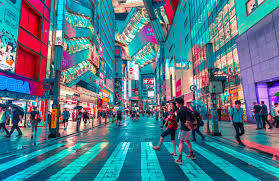
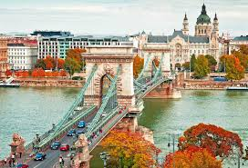

My trip to Paris was absolutely unforgettable. From strolling along the Seine River to marveling at the iconic Eiffel Tower, every moment was magical. I enjoyed wandering through charming streets, savoring delicious pastries at local cafés, and exploring world-famous museums like the Louvre. The blend of history, art, and vibrant city life made my Paris tour a truly enriching adventure.
Some Best Places To Visit In Paris
Eiffel Tower – The iconic symbol of Paris with stunning views from the top.
Notre-Dame Cathedral – Famous Gothic cathedral with beautiful architecture.
Seine River Cruise – A relaxing boat ride to see Paris landmarks from the water.
Le Marais – Trendy district full of historic sites, shops, and great food.
Tokyo Experience
My Tokyo tour was an incredible blend of tradition and modernity. From the serene temples like Senso-ji to the bustling streets of Shibuya and Akihabara, every corner of the city was alive with energy. I loved tasting authentic sushi, exploring quirky neighborhoods, and experiencing the futuristic vibe of places like Odaiba. Tokyo’s unique mix of ancient culture and cutting-edge technology made my trip truly unforgettable.

Some Best Places To Visit In Tokyo
Shibuya Crossing – The world-famous busy pedestrian scramble.
Meiji Shrine – Beautiful Shinto shrine nestled in a forested area.
Harajuku – Trendy area known for fashion, quirky shops, and crepes.
Tokyo Skytree – Tallest tower in Japan with panoramic city views.
Budapest Experience
My Budapest tour was a perfect mix of history, culture, and stunning architecture. Wandering along the Danube River, I was mesmerized by the majestic Parliament building and the charming Buda Castle. The thermal baths offered a relaxing break, while exploring the vibrant ruin pubs gave me a taste of the city’s unique nightlife. Budapest’s blend of old-world charm and lively atmosphere made my trip truly memorable.

Some Best Places To Visit In Budapest
Buda Castle – Historic castle complex with museums and stunning views.
Heroes’ Square – Monumental square with statues of Hungarian leaders.
Gellért Hill & Citadel – Great spot for hiking and city views.
Great Market Hall – Bustling market for local food, crafts, and souvenirs.